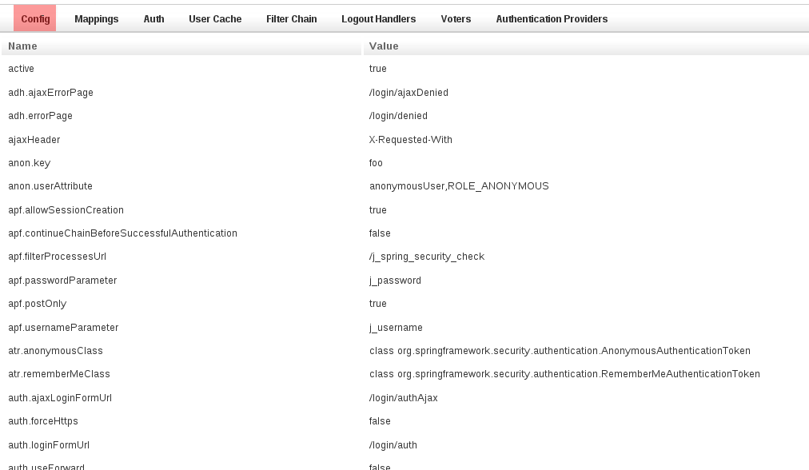
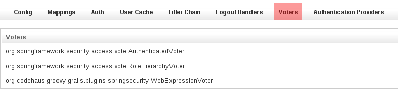
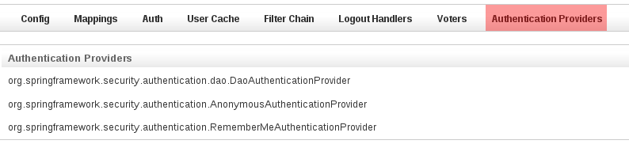

The Spring Security AppInfo plugin provides a UI to inspect your security configuration.
If you already have the spring-security-ui plugin installed you shouldn't install this plugin, since it's part of that plugin. It's split out here into its own for users who want this information but not the entire UI plugin.
Release History
The plugin has one controller (
SecurityInfoController.groovy) and is available by navigating to
/appname/securityInfo. There are eight menus:
Configuration
The Configuration menu item displays all security-related attributes in
Config.groovy. The names omit the
grails.plugins.springsecurity prefix:

Mappings
The Mappings menu item displays the current request mapping mode (Annotation, Requestmap, or Static) and all current mappings:

Current Authentication
The Current Authentication menu item displays your
Authentication information, mostly for reference to see what a typical one contains:

User Cache
The User Cache menu item displays information about cached users (this feature is disabled by default):

Filter Chains
The Filter Chains menu item displays your configured Filter chains. Typically there is just one chain, applied to all URLs

It is possible to have multiple URL patterns each with its own filter chain, for example when using HTTP Basic Auth for a web service.
Logout Handlers
The Logout Handlers menu item displays your registered
LogoutHandlers. Typically there will be just the two shown here, but you can register your own custom implementations, or a plugin might contribute one or more:

Voters
The Voters menu item displays your registered
AccessDecisionVoters. Typically there will be just the three shown here, but you can register your own custom implementations, or a plugin might contribute one or more:

Authentication Providers
The Authentication Providers menu item displays your registered
AuthenticationProviders. Typically there will be just the three shown here, but you can register your own custom implementations, or a plugin (e.g. LDAP) might contribute one or more:

Securing Access
Be sure to guard access to the
/securityInfo url since only authorized users should have access to this information. If you're using annotations, you can register a mapping in the
staticRules property in
Config.groovy:
grails.plugins.springsecurity.controllerAnnotations.staticRules = [
'/securityinfo/**': ['ROLE_ADMIN']
]
If you use database Requestmaps, create a new one:
new Requestmap(url: '/securityinfo/**', configAttribute: 'ROLE_ADMIN').save()
And if you use the
interceptUrlMap approach, add the mapping to that property in
Config.groovy:
grails.plugins.springsecurity.interceptUrlMap = [
…
'/securityinfo/**': ['ROLE_ADMIN'],
…
]